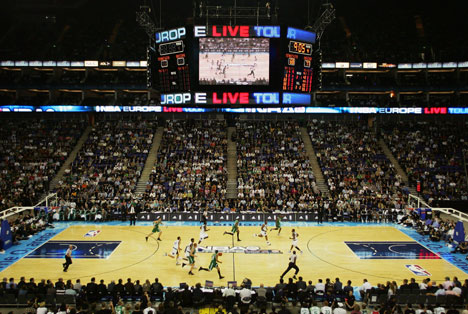
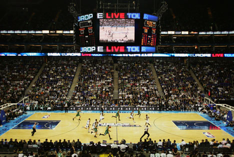

Fait par Clément Dubois, me contacter
Équipes présentées :
 

Lien vers pages :
La National Basketball Association (NBA) est la principale ligue de basket-ball au monde, créée le 6 juin
1946.
Elle est l'une des quatre ligues professionnelles majeures du sport américain,
aux côtés de la NFL (football américain), de la MLB (baseball) et de la NHL (hockey sur glace).
Le championnat comprend 30 franchises (équipes), réparties en deux Conférences (Est et Ouest), incluant
chacune trois divisions.
Après une saison régulière débutant en octobre et comprenant 82 matchs,
les huit meilleures équipes de chaque côté (Est et Ouest) s'affrontent en séries éliminatoires (playoffs).
Les Finales voient s'opposer la meilleure équipe de la Conférence Est contre celle de la Conférence Ouest.
L'équipe qui parvient à remporter quatre matchs en premier est nommée championne NBA.